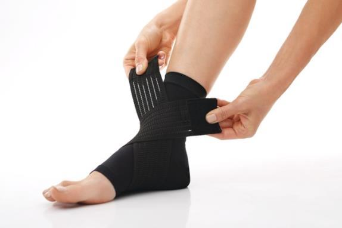
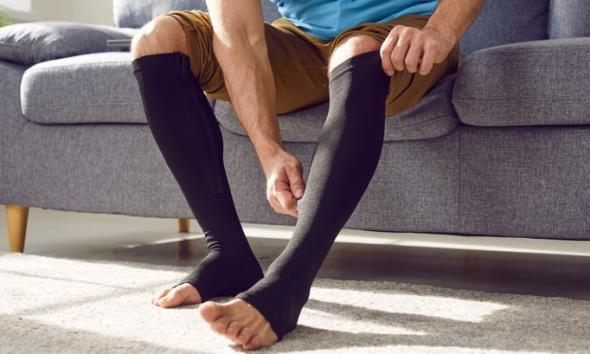
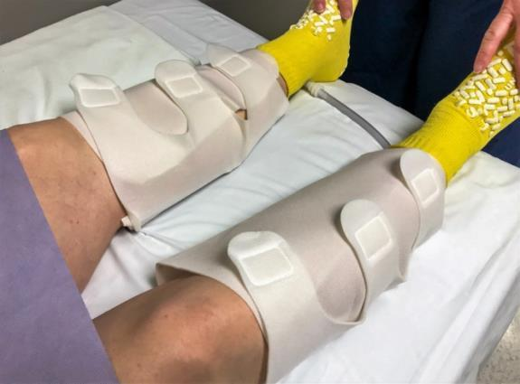
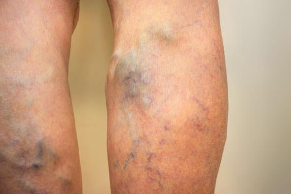
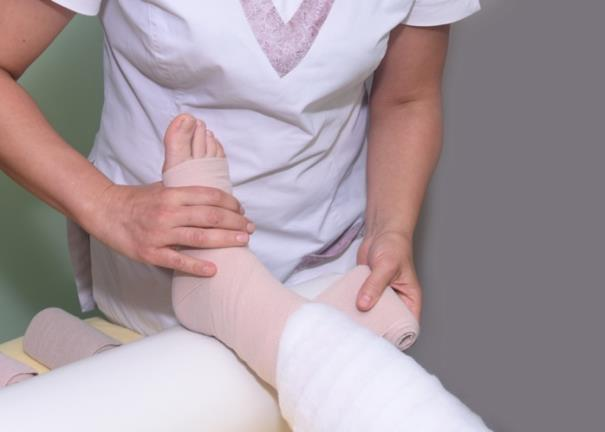

Compression therapy puts controlled pressure on a part of your body, like your legs or feet, to increase blood flow. It can be used for many reasons. It can help:
Reduce swelling
Ease pain
Move extra fluid from parts of the body
Reduce the risk and harm from blood clots
Your care team may have you use compression therapy for these reasons:
After surgery
To help with burns
To treat lymphedema, a buildup of lymph fluid
To treat lipedema or tender, swollen fat in the legs
For varicose veins
To help with healing from an injury
Compression can also help manage leg swelling and discomfort from:
Standing or sitting for long periods of time
Long travel on plane rides or car trips
Physical activities like running, hiking, or standing at work
Pregnancy

There are times when compression should not be used. Avoid compression if you have:
Open or infected sores
Peripheral artery disease called PAD, or atherosclerosis, where plaque made of fats and cholesterol hardens in the arteries
Compartment syndrome, when pressure is too high in the muscles caused by an injury
An abnormality of the arm or legs
There are many ways to apply pressure. The most common are socks, stockings, and wraps. There are inflatable devices too. Your care team will suggest the best method for you.
Sometimes blood gets stuck in the legs because of poor circulation. Special socks, stockings, and wraps apply gentle pressure to feet and legs. These garments give the most pressure near your ankle and gradually become less tight over your calf and thighs. This helps blood move toward your heart.

Socks and stockings are the most common compression garments. There are open toe, closed toe, knee high, and thigh high choices. The amount of pressure they give varies from very light to strong pressure.
There are also compression wraps. These can be easy to put on, and can be worn around the calf, ankle, foot, knee or thigh. Talk to your care team about which one is right for you.

Intermittent pneumatic compression, or IPC, uses sleeves that pump air in and out. The sleeves fit around your thighs, legs, or groin. They help blood move through your veins to your heart and back through your arteries. IPC is most often used after surgery to treat swelling and to help avoid blood clots, especially when you are not up and walking yet.
Air pumping in and out gently squeezes the area being treated. It should not hurt, so tell your care team right away if you feel pain.
During your hospital stay, you will wear the compression sleeves when lying in bed. They can be removed when you need to get up to use the bathroom or take a walk.
When you have vein disease, such as varicose veins, blood pools in parts of veins and makes them bigger. This can lead to pain and discomfort. It may occur after spending long periods on your feet over the years or even after pregnancy. It affects many men and women.

Using compression socks and wraps can help manage painful symptoms.
The starting pressure for treating varicose veins is often 20 to 30 mmHg, or millimeters of mercury, which is a measurement of pressure. If these stockings do not help, you can try using a stronger pressure of 30 to 40 mmHg.
Health insurance often covers compression therapy. Check your plan for details.
Deep vein thrombosis, called DVT, happens when a blood clot forms in the legs. It can be caused by certain health conditions or staying still for a long time, like during travel or extended
bed rest. DVT can be serious if the clot moves to the lungs. Compression socks may help with blood flow. If you already have a clot, ask your care team before using them.
Post-thrombotic syndrome, called PTS, is a condition that happens when the veins become damaged after a DVT.
Common symptoms of PTS are leg pain, swelling, and cramping. It can make it hard to move around and can last up to 2 years.
Compression stockings with medium ankle pressure of 18 to 24 mmHg are most recommended. Wearing these daily can prevent getting PTS or lessen the symptoms.
Lymphedema happens when lymph fluid builds in an area of the body, causing swelling. This can occur after surgery, from a medical condition, or after cancer treatment.
The type of compression depends on the amount of swelling. The garments can be worn on your arms or legs to help move fluid away from those areas. Pressure of 20 to 30 mmHg is most often used.
There are specialists who help manage lymphedema. They can help you find what kind of compression garment works best for you.
When blood pools in your legs for too long, it can cause them to swell. This creates pressure on your skin. Over time, the skin can break open. These are called venous ulcers.
These ulcers can start as red or brown spots on your leg. You might have dry and flaky skin. Clear fluid may leak out before they turn into open wounds.
Ulcers like this need compression therapy to heal. Your care team may suggest socks or stockings. They may also suggest wraps called multilayer wraps, which are much firmer.

Multilayer wraps are placed by your care team and changed each week. They may need to be changed more often if the wrap comes loose or gets wet with fluid or liquid. Keep your feet propped up as much as you can.
You might have discomfort while you get used to wearing compression garments. If the pain or discomfort does not go away, check with your team to make sure the size, pressure, and technique of putting on the garment are all correct.
Call if you have signs of infection, such as:
Your toes change color.
Your pain increases.
You have a fever or chills.
You have redness spreading on one or both legs.
Talk to your care team if you have heart failure, an infection, or arterial disease. These issues can make treatment dangerous.
Thank you for trusting us with your care. We are here to support you and want you to feel your best. Contact us with any questions.
IF YOU HAVE A MEDICAL EMERGENCY, CALL 911 OR GO TO THE EMERGENCY ROOM.
The information presented is intended for general information and educational purposes. It is not intended to replace the advice of your health care provider. Contact your health care provider if you believe you have a health problem.
Last updated January 2025
© 2025 Mytonomy, Inc. All rights reserved.